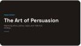

Make the video with Transform
One button sends your slides to Vids. Gemini writes a script for each slide, adds a voiceover, background music and simple animations, and you can edit the script before it builds anything.
-
1
Click Transform, then Turn into video
In your deck, click Transform at the bottom of the right-hand menu. The Turn into video panel opens. Click Turn into video.
Google Vids opens in a new tab.
No Transform button? Your account may not have Vids AI features yet. Let the AI & Innovation team know. -
2
Choose the slides
Every slide starts ticked. Untick any you don't want in the video, such as an image credits slide or a long activity slide.
Leave Include AI voiceover, script, background music and animation switched on, then click Next.
Shorter is better. Aim for 4 to 8 slides. Our 10 slides made a video of almost two minutes. -
Gemini's script

One script box per slide. Click any box to edit it. 3Read and rewrite the script
After a few seconds Gemini writes a script for each slide. This is the easiest place to fix it, before any audio is made.
Click into a box and type over it. In our demo we replaced a formal opening with one written for our own class.
Write for the ear. Short sentences, your students' names for things, and no more than two or three sentences per slide. -
Press play to hear the narrator. The pencil changes the voice for the whole video. 4Choose the narration, then create
Under Narration, choose Voiceover only or AI avatar and voiceover. Scroll down to hear the narrator and check Animations is on.
Click Create the draft video. It takes about a minute.
-
5
Meet your draft
The video opens in the Vids editor. Each slide is a scene along the timeline. Underneath are:
- Green bars: text that animates in.
- A long music bar: the background track.
- One voiceover clip per scene, labelled with its first words and the voice.
Click Play at the top to watch it all the way through.
Change the script, the voice and the language
Every scene has its own voiceover, so you can rewrite one slide, give a quotation its own voice, or switch one scene into Arabic without touching the rest.
-
1
Open the AI voiceover panel
On the timeline, click the voiceover clip for the scene you want to change. A small toolbar appears. Click the first icon to open AI voiceover.
Or click Voiceover in the right-hand menu. Use the arrows next to Scene 2 / 10 to move between scenes.
-
2
Rewrite a scene's script
Click into the script box, select the text and type your own. The scene is marked Voiceover outdated until you update it in step 4.
Our demo: By the end of this video, you'll be able to spot the three persuasive appeals, explain how they make an audience feel, and judge which one works best. -
3
Give this slide its own voice
Under Voiceover, click Change. Press play to preview voices, click the one you want, then Select.
With Current scene selected, the new voice applies to this slide only.
Use it for a reason. A second voice works well for a quotation, a counter-argument, or a "student" asking a question. -
4
Update the voiceover
Click Update voiceover, then Replace. After a few seconds Voiceovers were successfully replaced appears and the clip on the timeline shows the new script and voice.
One scene or all? Current scene changes one slide. All scenes shows every script and has Update all voiceovers. Use it when you want one voice for the whole video. -
Click the globe next to Voiceover to see the supported languages. 5Switch a scene into Arabic
The voice speaks whatever language the script is written in. To change the language:
- Translate the script, for example with Translate text in the Classroom Gemini tab (Station 1).
- Paste the translation over the English script.
- Click Update voiceover › Replace.
Get a second listener. Ask an Arabic-speaking colleague to check the translation and how the voice says it. The text on the slide itself stays in English unless you change it.
Change the music or turn it down
The draft comes with a stock music track that can compete with the voice. Turn it down, make it duck under the narration, or create a new track that fits your subject.
-
1
Lower the music volume
Click the long music bar at the bottom of the timeline, then the speaker icon that appears. In the Sound panel, drag the Volume slider or type a number and press Enter.
Try 20 to 30%. Students should hear the music start, then forget about it. Tick Mute to remove it completely. -
2
Let it duck under the voice
Scroll down the Sound panel to Automatic ducking. For music, choose Background: the music dips whenever the voiceover speaks and comes back up in the gaps.
The draft music in our demo already had Background set. Music you add yourself may not, so check this every time.
-
3
Create new music
Click Music in the right-hand menu. Describe the mood and instruments, open the settings to switch on Instrumental, and click Generate.
Our demo prompt: Calm, focused background music for a high school English lesson video. Soft piano and light strings, steady tempo, nothing distracting.Press play to listen. If it's wrong, click Recreate.
-
4
Swap the old music for the new
- Click the old music bar and press Delete.
- Click the time under the preview so the playhead jumps to 00:00.0.
- In the Music panel, click Insert.
- Click the new bar, then the speaker icon. Set ducking to Background and volume to about 30%.
Watch the playhead. Insert puts the music wherever the playhead is. If it lands halfway through, press Ctrl+Z and try again.
Make a 60 to 90 second recap video
- Use the deck you built at Station 2, or any checked deck. Keep 4 to 6 slides.
- Rewrite the first slide's script so it sounds like you talking to your class.
- Give one slide a different voice, or switch one slide into a language your students speak at home.
- Set the music to Background ducking and about 30% volume. Watch it all the way through with headphones.
Check it
Listen to every scene
AI voices can mispronounce names, Arabic terms and abbreviations. Rewrite the script spelling if a word sounds wrong.
Check the script matches the slide
Gemini writes the narration from your slides. Make sure it says what the slide shows and nothing extra.
Check translations
Have a fluent speaker check any non-English scene before it reaches students or families.
Keep it short
Under two minutes holds attention. Cut slides rather than speeding up the voice.